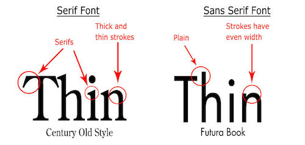
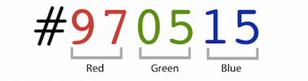
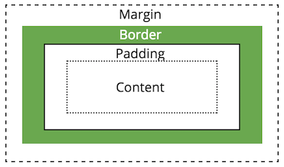
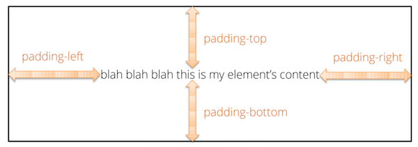
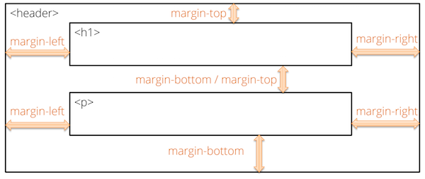
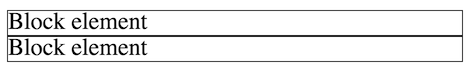
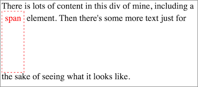
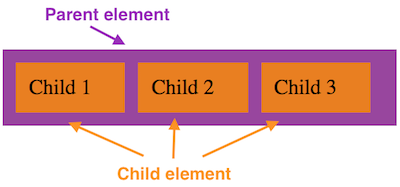
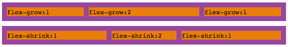

Chapter 7 Proprieta’ CSS
CSS Fundamentals ha introdotto la sintassi base e l’uso di CSS. Questo capitolo fornisce dettagli aggiuntivi su alcune proprieta’ comuni di aspetto che possono essere modificate con CSS.
Questo capitolo non e’ una reference completa (per quello usa la reference MDN), ma vuole offrire spiegazioni ed esempi specifici per stilizzare pagine con CSS.
7.1 Specificare i valori delle property
Come descritto in CSS Fundamentals, le property si specificano con il nome, seguito da due punti (:) e terminando con un punto e virgola (;):
p {
/* Una property di base */
color: purple;
}I valori possono essere keyword specifiche della property (inclusi nomi di colori come purple), stringhe (tra virgolette) o valori numerici (vedi Units & Sizes sotto). I valori validi dipendono dalla property; usa la reference e gli esempi come guida.
Alcune property si scrivono con piu’ valori, di solito separati da spazi (non da virgole). Per esempio, la property border puo’ essere specificata con 3 valori: il primo e’ la larghezza del bordo, il secondo lo stile e il terzo il colore:
div {
/* Una property che ha 3 valori. Sono separati da spazi */
border: 3px dotted red;
}Molte (ma non tutte) le property con piu’ valori sono shorthand properties – property che permettono di specificare piu’ componenti in una sola volta. L’esempio di border sopra e’ in realta’ una shorthand per tre property: border-width, border-style e border-color:
div {
/* Border impostato come singole properties; equivalente all'esempio precedente */
border-width: 3px;
border-style: dotted;
border-color: red;
}Le shorthand possono essere specificate con un numero variabile di valori, e il numero/ordine determina quali componenti vengono impostati:
.all-sides-padding {
/* Specifica il padding (spaziatura) su tutti e 4 i lati in una volta--top, right, bottom, left */
padding: 1px 2px 3px 4px;
}
.x-and-y-sides-padding {
/* Specifica il padding su top & bottom, poi su left & right */
padding: 10px 20px;
}Le opzioni disponibili dipendono dalla property – controlla la documentazione.
Includere una shorthand equivale a scrivere tutte le property che sostituisce; quindi sovrascrive le property precedenti nella stessa regola (se una property e’ dichiarata piu’ volte, vale l’ultima). Per questo e’ meglio usare solo la shorthand, oppure specificare esplicitamente ogni componente.
body {
border-color: red;
border: 3px solid blue; /* la property successiva override quelle precedenti */
/* il border sara' blu invece che rosso */
}Valori di property ereditati
Se non imposti esplicitamente una property per un elemento, l’elemento verra’ comunque stilizzato (avra’ dimensione, font, colore, ecc.) – il valore sara’ ereditato dal parent.
/* CSS */
ul { /* applies to all <ul> elements */
font-size: larger;
}
li { /* applies to all <li> elements */
color: red;
}<!-- HTML -->
<ul>
<li>
Il contenuto di questo elemento sara' con un font size piu' grande (ereditato dal
parent), oltre che rosso (specificato direttamente).
</li>
<li>(Anche il contenuto di questo elemento lo sara' perche' si applicano le stesse regole)</li>
</ul>Nell’esempio sopra, gli elementi <li> avranno un font piu’ grande anche se una regola non applica quella property direttamente – il parent <ul> riceve il valore, e i child <li> lo ereditano.
Se lo styling del parent non e’ stato specificato da te, l’elemento puo’ comunque ereditare uno stile dal browser built-in stylesheet, spesso chiamato user-agent stylesheet. Questo e’ lo styling “di default” che si applica agli elementi, ad esempio heading grandi e bold. Anche se molti browser hanno stylesheet simili, l’utente puo’ modificarli (ad es. aumentando il font-size di default per accessibilita’). Quindi a volte devi stilizzare esplicitamente un elemento per sovrascrivere lo styling di default del browser.
Se vuoi indicare esplicitamente che un elemento deve essere stilizzato come il parent, puoi dare a quella property il valore inherit. Se vuoi che un elemento usi il valore di default del browser, puoi usare initial. Questi valori sono utili quando vuoi “annullare” una regola piu’ generale.
h1 {
/* color dovrebbe essere lo stesso (ereditato) dal parent element */
color: inherit;
/* font-size dovrebbe usare il valore iniziale del browser */
font-size: initial;
}Nota che non tutte le property sono ereditate. Per esempio, border e’ una non-inherited property; un child non ottiene un bordo solo perche’ il parent lo ha. La maggior parte delle property di testo o colore sono ereditate, mentre le property di dimensione e layout spesso no (di solito come ci si aspetta). Puoi verificare nella documentazione della property.
Unita’ di lunghezza e dimensioni
Molte property CSS influenzano la dimensione delle cose sullo schermo, che sia l’altezza del testo (font-size) o la larghezza di un box (width). In CSS puoi usare varie unita’ per specificare le dimensioni.
In generale, le dimensioni CSS sono misurate in pixel (px). Un pixel rappresenta un singolo punto rasterizzabile di un display (non e’ un quadratino) ed e’ l’unita’ piu’ comune per misurare le dimensioni sullo schermo. Sul web, un pixel e’ definito come \(\frac{1}{96}\) di pollice; puo’ variare in base a dimensione e risoluzione del display, ma pensare a 100px come circa un pollice di spazio e’ una buona euristica. Un pixel e’ un’unita’ assoluta; una dimensione in pixel e’ considerata sempre la stessa.
CSS supporta anche altre unita’ assolute, inclusi pollici (1in = 96px), centimetri (1cm = 37.8px), millimetri e punti (\(\frac{1}{72}\) di pollice, 1pt = 1.33px; non usare per font). Queste sono in genere inappropriate per display e piu’ utili per la stampa, quindi non si usano per pagine web.
CSS usa anche diverse unita’ relative, che producono dimensioni basate sulla dimensione di altri elementi. Le unita’ piu’ comuni sono:
em: uneme’ misurato rispetto alfont-sizedel parent:/* Un parent element ha un font-size di 16px */ .parent { font-size: 16px; } /* Il child element avrebbe un font-size di 32px */ .child { font-size: 2em; }Se il font-size del parent fosse
20px, allora2emper il child sarebbe40px. Questo e’ utile per indicare, ad esempio, che vuoi un font “due volte piu’ grande”. Un uso attento di font-size basati suempermette uno scaling efficace: cambiando il font-size del parent, tutti i child si ridimensionano di conseguenza.Nota che, anche se
emera originariamente una misura tipografica, questa unita’ non cambia in base alfont-family.Un
empuo’ essere usato anche per property non tipografiche comewidth; in questi casi il valore in pixel e’ calcolato rispetto al font-size dell’elemento corrente.rem: unreme’ misurato rispetto al font-size dell’elemento root (<html>). Poiche’ molti browser hanno un font-size root di default di16px, in genere2rem = 32px.Usare
rempermette uno scaling relativo a livello documento invece che a livello elemento. Questo aiuta la coerenza; gli elementi non “gonfiano” a causa di moltiplicatoriem. Ma usare unita’reminvece dipxrende la pagina piu’ accessibile (gli utenti possono aumentare il font-size di default) e supporta meglio browser diversi.%: un valore percentuale e’ misurato rispetto al valore della stessa property nel parent (font-size, width, ecc.). Per esempio, se il parent hawidth: 300px, un elemento conwidth: 50%sara’ largo150px.Per i font-size, le percentuali sono equivalenti a
em. Per esempio,.75emequivale a75%;2emequivale a200%. In generale e’ best practice usareemper i font. Le percentuali sono appropriate per dimensioni comewidthoheight.vw,vh: queste unita’ sono relative alle dimensioni del viewport (finestra del browser).1vwe’ l’1% della larghezza del viewport e1vhl’1% dell’altezza (25vwsarebbe il 25% della larghezza). Se il browser cambia dimensione, questi valori cambiano. Questo puo’ essere desiderato, ma rende piu’ difficile stilizzare una pagina che appaia bene su molte dimensioni. In effetti una%puo’ ottenere un effetto simile avw.
La maggior parte dei browser ha un font-size di default di 16px, quindi 1em e 1rem sono inizialmente equivalenti a 16px.
Per valori di lunghezza 0 (usati ad es. per padding o margin), ometti le unita’ come ridondanti – usa solo 0, non 0px.
In generale, dovresti specificare i font-size con unita’ relative (ad es. em) – questo supporta l’accessibilita’, perche’ utenti con impairment visivi possono aumentare il font-size di default e tutto il testo si adattera’. Le unita’ assolute sono migliori per elementi che non scalano tra dispositivi (ad es. dimensioni delle immagini o la max-width del contenuto). Tuttavia, usare dimensioni relative permette a quei componenti di scalare col resto della pagina.
I font-size dovrebbero essere sempre relativi (em o rem); le dimensioni di layout possono essere assolute (ma le unita’ relative sono migliori).
7.2 Font e testo
Specifichi il font tipografico (typeface) usando la property font-family. Questa property prende una lista separata da virgole di nomi di font (stringhe). Il browser tenta di renderizzare il testo usando il primo font della lista; se quel font non e’ disponibile sul computer client, usa il successivo e cosi’ via (questi font secondari sono “fall-backs”). I nomi dei font con spazi sono obbligatoriamente tra virgolette (singole o doppie), come “Helvetica Neue”. Ma e’ buona pratica mettere tra virgolette tutti i nomi di font – rende piu’ facile modificarli se scegli un font con piu’ parole, e li distingue dai nomi generici (vedi sotto).
p {
font-family: 'Helvetica Neue', 'Helvetica', 'Arial', sans-serif;
}In questo esempio, il computer tenta di renderizzare il testo con 'Helvetica Neue'. Se quel font non e’ installato, prova 'Helvetica', poi 'Arial', e infine un font generico sans-serif.
Infatti, l’ultimo font nella lista dovrebbe sempre essere un generic family name. Questi sono “categorie” da cui il browser puo’ attingere anche se il computer non ha font comuni disponibili. In pratica, le famiglie generiche piu’ comuni sono serif (font con serif, es. “Times”), sans-serif (font senza serif, es. “Arial”), e monospace (font con caratteri a larghezza fissa, es. “Courier”).
Nota che le famiglie generiche non vanno tra virgolette: e’ sans-serif, non "sans-serif". Se le metti tra virgolette, il browser le interpreta come nomi di font specifici, non come generici.

Ricerche (grossolanamente) suggeriscono che i font sans-serif siano piu’ leggibili su schermo e piu’ accessibili per utenti con dislessia. Quindi e’ consigliato usare font sans-serif per la maggior parte del testo.
E’ anche possibile includere typeface specifici nella pagina, che saranno consegnati al browser dal web server se il client non li ha. Lo fai manualmente con la regola @font-face, specificando l’url del file del font (di solito in formato .woff2).
Tuttavia, spesso e’ piu’ semplice includere uno stylesheet che ha gia’ questa regola. Per esempio, Google Fonts fornisce piu’ di 800 font gratuiti che puoi includere direttamente nella pagina:
<head>
<!-- ... -->
<!-- load stylesheet with font first so it is available -->
<link href="https://fonts.googleapis.com/css?family=Encode+Sans" rel="stylesheet">
<!-- load stylesheet next -->
<link href="css/style.css" rel="stylesheet">
</head>body {
font-family: 'Encode Sans', sans-serif; /* can now use Encode Sans */
}
Nota che il <link> puo’ puntare a un file esterno su un altro domain. E’ pratica comune quando si usano font e CSS framework.
Importante Quando usi Google Fonts, devi specificare se vuoi varianti come bold o italic. Per esempio, il font Encode Sans e’ disponibile in font-weight da 100 a 900, ma devi specificarli nella risorsa linkata:
<!-- includes normal (400) and bold (700) weights -->
<link href="https://fonts.googleapis.com/css?family=Encode+Sans:400,700" rel="stylesheet">Se non includi i set di glifi per il font bold, allora rendere il testo bold non avra’ effetto (perche’ il browser non sa come mostrare “Bold Encode Sans”)!
Altre librerie di font possono essere usate per aggiungere icone o simboli a una web page. Per esempio, il Material Design icon font for the web permette di specificare icone assegnando una class particolare agli elementi. Altri font di icone includono Octicons e Font Awesome.
Le Emoji sono definite con un set diverso di valori Unicode e dipendono dal browser e dal sistema operativo invece che da un font.
Puoi rendere un font italic con la property font-style, o bold con font-weight. I font-weight sono valori ordinali da 100 a 900. Per la maggior parte dei font questi valori sono specifici: non esiste un font-weight 340 (solo 300 e 400). Spesso usare keyword per i font-weight (ad es. normal, bold, black) e’ piu’ leggibile.
7.3 Colori e background
I colori delle property CSS (foreground o background) possono essere specificati in diversi modi.
Puoi usare uno dei 140 nomi colore predefiniti:
p {
color: mediumpurple;
background-color: gold;
}Anche se la lista non offre molta flessibilita’, puo’ essere un buon placeholder e un punto di partenza per il design. La lista dei nomi colore CSS ha anche una storia affascinante.
In alternativa, puoi specificare un colore come valore “red-green-blue” (RGB). Questo rappresenta il colore additive, cioe’ il colore che risulta quando una certa quantita’ di luce rossa, verde e blu colpisce uno sfondo bianco. I valori RGB sono il modo piu’ comune di specificare colori nei programmi.
p {
color: rgb(147, 112, 219); /* medium purple */
}Questo valore e’ una funzione che prende tre parametri per rosso, verde e blu. Ogni parametro va da 0 (nessuna componente) a 255 (componente al massimo). Quindi rgb(255,0,0) e’ rosso brillante, rgb(255,0,255) e’ magenta, rgb(0,0,0) e’ nero e rgb(255,255,255) e’ bianco.
Se vuoi rendere il colore parzialmente trasparente, puoi specificare un valore alpha usando rgba(). Questa funzione prende un quarto parametro, un valore decimale da 0 (trasparente) a 1.0 (opaco). I colori trasparenti si “fondono” con gli elementi dietro (il che richiede un posizionamento non standard).
CSS supporta anche le funzioni hsl() e hsla() per specificare il colore in termini di modello hue, saturation, lightness.
Infine, e’ piu’ comunemente, puoi specificare il valore RGB come numero esadecimale (base-16).
p {
color: #9370db; /* viola medio */
}In questo formato, il colore inizia con #, le prime due cifre rappresentano il rosso (da 00 a FF, che e’ esadecimale per 255), le seconde due il verde e le terze due il blu:

Questo e’ un modo piu’ compatto ed efficiente per descrivere un colore RGB, ed e’ come la maggior parte degli artisti digitali comunica i colori. Vedi questo articolo per maggiori dettagli sull’encoding dei colori.
Background e immagini
Hai gia’ visto come usare background-color per colorare il background di un elemento. CSS supporta anche una lista piu’ ampia di property relative al background. Per esempio, background-image permette di impostare un’immagine come background di un elemento:
header {
background-image: url('../img/page-banner.png');
}Questa property prende come value un tipo url(), scritto come una funzione con parametro stringa che indica l’URI della risorsa. Questi URI possono essere assoluti (ad es. http://...) o relativi alla posizione dello stylesheet (non alla web page – potresti dover usare .. se il file .css e’ nella directory css/).
Esistono altre property per personalizzare le immagini di background, inclusa la posizione (ad es. center), la dimensione, la ripetizione, se deve scorrere con la pagina, ecc.
header {
background-image: url('../img/page-banner.png');
background-position: center top; /* allinea al centro in alto */
background-size: cover; /* stretch per riempire l'elemento; preserva il ratio (l'immagine puo' essere tagliata) */
background-repeat: no-repeat; /* non ripetere */
background-attachment: fixed; /* resta ferma quando la finestra scorre */
background-color: beige; /* puoi ancora averlo per tutto cio' che l'immagine non copre
(o per immagini trasparenti) */
}Sono molte property. Per capire tutte le opzioni di valore, leggi la documentazione ed esempi per i background.
Per semplificare, CSS include anche una shorthand property chiamata background. Usandola, l’esempio sopra equivale a:
header {
background: url('../img/page-banner.png') top center / cover no-repeat fixed beige;
}Nota che background-position e background-size sono separati da / perche’ possono avere piu’ valori. Puoi includere alcune o tutte le property disponibili nella shorthand. A differenza di molte shorthand, le property background possono andare in qualsiasi ordine (anche se l’ordine sopra e’ raccomandato).
Inoltre, tutte le property background supportano background multipli usando una lista separata da virgole di valori. Questo permette di sovrapporre immagini semi-trasparenti, simile ai layer in un editor di immagini.
7.4 Spaziatura con il Box Model
Il CSS Box Model e’ uno dei concetti core in CSS e uno dei framework centrali con cui gli elementi sono presentati visivamente nella pagina.
Tutti gli elementi HTML (incluso il testo!) includono un “box” immaginario attorno al loro contenuto. Gli elementi sono disposti con i box uno accanto all’altro (fianco a fianco per elementi inline, impilati per elementi block – vedi Flow Layout). Questi box sono normalmente grandi quanto basta per contenere il contenuto, ma puoi usare CSS per alterare dimensioni e spaziatura tra box per influenzare il layout.
Prima di tutto, puoi impostare width e height degli elementi. Nota che se width o height sono troppo piccoli per il contenuto, il contenuto verra’ tagliato di default (controllato da overflow). In genere e’ meglio impostare solo width o height, non entrambi. Puoi anche usare min-width o min-height per garantire una dimensione minima. Viceversa, max-width e max-height limitano la dimensione massima. width e height si applicano solo a elementi block (come <p> o <div>); gli inline (come <em> o <a>) sono sempre dimensionati in base al contenuto.
Per regolare lo spazio tra box, puoi manipolare tre property: padding, border e margin.

Queste property si vedono nei Chrome Developer Tools quando selezioni un elemento: il contenuto e’ blu, il padding verde, il border con un colore proprio e il margin arancione.
Padding
Il padding e’ lo spazio tra il contenuto e il border (il bordo del box). Se pensi al contenuto come dentro una scatola, questo e’ lo spazio di “imbottitura” attorno al contenuto.

Il padding si puo’ specificare per ogni lato con padding-top, ecc., oppure usare la shorthand padding per piu’ lati:
/* specify each side individually */
.individual-sides-padding {
padding-top: 1em;
padding-bottom: 1em;
padding-left: 2em;
padding-right: 0; /* no units needed on 0 */
}
/* specify one value for all sides at once */
.all-sides-padding {
padding: 1.5em;
}
/* specify one value for top/bottom (first) and one for left/right (second) */
.x-and-y-sides-padding {
padding: 1em 2em;
}Il padding e’ considerato “dentro” l’elemento. Quindi colori o immagini di background si applicano anche all’area di padding. Aggiungere padding e’ un buon modo per aumentare la “dimensione” di un elemento senza impostare width/height esplicite.
Border
Come detto, il border puo’ essere reso visibile e stilizzato in termini di larghezza, colore e stile. Anche se possono essere impostati singolarmente, e’ comune usare la shorthand per specificare tutti e tre.
.boxed {
border: 2px dashed black; /* border on all sides */
}Come per il padding, puoi specificare il border su un singolo lato con border-top, ecc. In effetti puoi specificare ogni aspetto del border (width, color, style) per ogni lato – la property border e’ una shorthand per 12 property diverse.
.underlined {
border-bottom: 1px solid red; /* border one side */
}
.individual-op-border { /* control border properties separately */
border-top-width: 4px;
border-top-color: blue;
border-top-style: dotted;
}La property border-radius puo’ “arrotondare” gli angoli del box. Il valore e’ il raggio dell’arco arrotondato.
.rounded-rect {
border-radius: 5px; /* rounded corners! */
}
.circle {
border-radius: 50%; /* radius is half the width, so produces a circle */
}Margin
Infine, il margin specifica lo spazio tra questo box e gli altri box.

Il margin si dichiara in modo equivalente al padding, con property individuali e shorthand simili:
.individual-sides-margin {
margin-top: 1em;
margin-bottom: 1em;
margin-left: 2em;
margin-right: 0; /* no units needed on 0 */
}
/* specify one value for all sides at once */
.all-sides-margin {
margin: 1.5em;
}Nota che i browser in genere collassano (sovrappongono) i margin degli elementi adiacenti. Per esempio, se hai due paragraph uno sopra l’altro e imposti margin-bottom sul primo e margin-top sul secondo, molti browser sovrappongono i margin e usano il valore maggiore per determinare lo spazio.
Padding vs. Margin
Padding e margin servono entrambi ad aggiungere spazio attorno al contenuto – infatti, senza un border o background visibile, aggiungerne uno o l’altro produce un aspetto simile. A volte e’ difficile decidere quale usare.
Per decidere, ricorda che padding aggiunge spazio dentro l’elemento, mentre margin aggiunge spazio fuori. Se vuoi che l’elemento occupi piu’ spazio (border piu’ lontano o area di background piu’ grande), usa padding. Se vuoi spazio tra border o background visibili, usa margin.
Quando i confini tra elementi non sono visibili, considero la semantica: sto aggiungendo spazio per far occupare piu’ spazio all’elemento (padding), o per allontanarlo dagli altri (margin)? Spesso uso padding per elementi piccoli o inline, e margin per elementi block o di sezione. Entrambi possono andare bene; l’importante e’ essere consapevoli se devi poi regolare lo spacing.
Box-Sizing
padding, border e margin permettono di mettere spazio tra i contenuti, ma quando assegni una width o height esplicita, la dimensione specificata non include padding e border nel calcolo della dimensione finale. Quindi, se hai:
.my-box {
width: 100px;
padding: 10px; /* includes both left and right */
}L’elemento occupera’ 120px sullo schermo: la width piu’ padding sinistro e destro.
Questo puo’ sembrare intuitivo, ma complica il sizing quando aggiungi border o padding. In layout complessi o responsive, spesso e’ utile che la width rappresenti la larghezza totale del box, senza calcolare padding e border a parte. Puoi farlo con la property box-sizing – il valore border-box indica che la dimensione specificata (es. width) include padding e border.
.my-better-box {
box-sizing: border-box;
width: 100px
padding: 10px;
border: 1px solid black;
}L’elemento sopra occupera’ 100px sullo schermo. Questo significa che il contenuto puo’ avere meno spazio del previsto, ma ti permette di regolare padding o border senza preoccuparti della larghezza complessiva.
E’ comune voler applicare questa property a tutti gli elementi della pagina, usando il universal selector.
* {
box-sizing: border-box; /* all elements include border and padding in size */
}Questa e’ una buona regola da includere in cima a ogni .css, ed e’ spesso presente nei reset stylesheet.
7.5 Flow Layout
Per default, gli elementi HTML sono mostrati secondo il layout normal flow. Questo layout e’ determinato dall’ordine degli elementi nel source code e dal fatto che ogni elemento sia block o inline.
Come descritto in HTML Fundamentals, gli elementi inline (es. <em>, <a>, <span>) sono posizionati uno accanto all’altro su una singola riga (da sinistra a destra, a meno che non si specifichi una lingua right-to-left). Gli elementi block (es. <p>, <ul>, <div>) sono posizionati su righe successive, dall’alto verso il basso.
<div>Block element</div>
<div>Block element</div>
<span>Elemento inline</span>
<span>Altro elemento inline</span>
E’ buona pratica lasciare al browser il normal flow quando possibile. Se la posizione di un elemento in base al tipo e alla posizione nel codice e’ corretta, non cambiarla. E’ meglio lasciare al browser fare il suo lavoro e usare CSS per piccoli aggiustamenti (ad es. un po’ di padding o margin). Questo mantiene il CSS piu’ semplice e aiuta a garantire che il contenuto si renderizzi bene su browser e dispositivi diversi.
Tutti gli elementi HTML sono classificati come block o inline. Tuttavia e’ possibile cambiare il tipo dichiarando la property display:
.inlined {
display: inline;
}<!-- questo produrra' lo stesso risultato di usare elementi <span> -->
<div class="inlined">Elemento inline</div>
<div class="inlined">Altro elemento inline</div>Cambiare display e’ utile se la semantica di un elemento e’ appropriata ma vuoi renderizzarlo in modo diverso. Per esempio, puoi far apparire <li> come inline per ottenere liste orizzontali.
Oltre a block e inline, gli elementi possono avere display: inline-block. Un elemento inline-block e’ disposto come inline (quindi affiancato ad altri), ma puo’ avere width, height e altre property da block.

display: inline-block.La property display permette anche di rimuovere gli elementi dal flow con none. Questo rimuove l’elemento dal normal flow e anche dal contenuto letto da tecnologie assistive come gli screen reader.
.hidden {
/* non mostrare l'elemento */
display: none;
}display: none e’ usato spesso quando JavaScript e lo styling dinamico permettono di rimuovere o “nascondere” un elemento. Per pagine statiche, se un contenuto non deve essere mostrato, spesso basta non includerlo nell’HTML.
7.6 Posizionamento alternativo
Per default, gli elementi sono posizionati in base al normal flow descritto sopra. In generale e’ il modo migliore e piu’ semplice. Tuttavia e’ possibile posizionare elementi fuori dal normal flow.
Un modo per farlo e’ usare la property position. Questa property permette di specificare la posizione relativa o esatta di un elemento nel documento. position indica un approccio diverso dal normal flow, e poi top, bottom, left e right indicano dove o di quanto spostare.
Per esempio, un elemento con position: relative aggiusta la posizione relativamente alla sua posizione nel normal flow, spostandolo della distanza indicata:
.relative-element {
position: relative; /* position verra' cambiata relativamente */
top: 10px; /* sposta la posizione di 10px verso il basso */
left: 20px /* sposta la posizione di 20px verso destra */
}Le property top, left, ecc. prendono un offset come valore. Quindi top: 10px sposta l’elemento verso il basso di 10px, e una property di left: 20px sposta l’elemento verso destra di 20px. Questi valori possono essere negativi: top: -15px sposta l’elemento verso l’alto di 15px. Poiche’ top e bottom specificano entrambi la posizione verticale (e left/right quella orizzontale), si imposta solo uno dei due per asse; un elemento non dovrebbe avere sia top che bottom perche’ sarebbero ridondanti o in conflitto.
Dato che questi valori sono offset in un sistema di coordinate con y invertita, a volte e’ difficile intuire dove finiscono gli elementi. Quindi ispeziona sempre il risultato visivamente e riduci al minimo gli elementi fuori dal normal flow.
E’ anche possibile usare position: absolute. Un elemento posizionato absolute sara’ mostrato alle coordinate specificate rispetto al suo primo parent non-static. Questo permette di specificare dove posizionare un elemento dentro un parent.
.absolute-element {
position: absolute; /* position verra' determinata in modo assoluto */
top: 0; /* posizione a 0px dal top della pagina */
left: 30% /* posizione a 30% della width della pagina da sinistra */
}Importante: gli elementi absolute sono posizionati in base al primo parent non-static (static e’ il valore di default che indica normal flow). Senza altre modifiche, questo sarebbe il <body>, quindi l’elemento sarebbe posizionato rispetto alla pagina intera (e si muoverebbe al cambiare della finestra). La pratica comune e’ mettere elementi absolute come child di un parent position: relative (anche senza ulteriori offset), cosi’ gli elementi absolute sono posizionati rispetto a quel parent. Vedi questo post per esempi.
E’ anche importante notare che un elemento absolute non ha spazio nel normal flow: gli altri elementi non si spostano per farlo entrare; l’elemento absolute li sovrappone. Quindi usare absolute spesso richiede di creare spazio extra con altri posizionamenti o padding.
In generale, non dovresti usare position: absolute. Questo posizionamento e’ spesso inflessibile – stai hardcodando una posizione – e non si adatta bene a browser, dispositivi o esigenze diverse. Rende piu’ difficile adattarsi a cambiamenti di codice o contenuto. Usare il normal flow quando possibile tende a funzionare meglio.
Infine, position puo’ anche essere fixed per indicare la posizione rispetto al viewport (finestra del browser), simile a absolute senza parent relativo. Un elemento con position: sticky verra’ offset rispetto al suo parent scrolling (di solito la finestra del browser) e restera’ li’ anche quando la pagina scorre. Questo e’ il modo per creare una “sticky navbar” sempre in alto – anche se questi effetti consumano spazio prezioso con contenuto che l’utente potrebbe non aver bisogno in quel momento.
Floating
Puoi anche posizionare un elemento fuori dal normal flow facendolo float. Questo e’ comune con le immagini, ma puo’ essere fatto con qualsiasi elemento. Un elemento floating viene spinto su un lato, con il resto del contenuto che scorre attorno:
.floating-image {
float: right;
margin: 1em; /* per lo spacing */
}Il contenuto continuera’ a stare accanto a un elemento floating finche’ non lo “supera” (va alla riga successiva). Puoi forzare il contenuto a “clearare” un float usando la property clear. Un elemento con questa property non puo’ avere elementi floating sul lato indicato:
.clear-float {
clear: both; /* non permettere elementi floating su entrambi i lati */
}La property float e’ utile quando vuoi che del contenuto stia a lato. Ma non usarla per layout complessi (ad es. multi-colonne); ci sono soluzioni migliori, come Flexbox.
Non usare mai il tag <table> per strutturare documenti e posizionare contenuti. Il tag <table> va usato solo per contenuto semanticamente tabellare (ad es. data table). Se vuoi un layout a griglia, usa un sistema CSS come Flexbox.
7.7 Flexbox
Un Flexbox e’ una tecnica per disporre facilmente elementi in righe o colonne flessibili. Flexbox e’ un’alternativa al normal flow ed e’ particolarmente utile per creare layout complessi come multi-colonne. Un layout Flexbox permette di disporre gli elementi dentro un container in modo che lo spazio sia flessibilmente distribuito. Questo offre vantaggi come colonne con altezze allineate.
Flexbox e’ uno standard recente supportato dalla maggior parte dei browser moderni; ha un’implementazione buggata in Microsoft IE, ma e’ supportato in Edge. Per browser vecchi, puoi usare un sistema a griglia di un CSS framework come Bootstrap.
Nonostante le sue capacita’, Flexbox e’ progettato soprattutto per flussi monodirezionali (ad es. una riga di colonne). Per layout a griglia veri, i browser stanno adottando un altro standard emergente chiamato Grid. Grid condivide alcune idee con Flexbox (configurare child dentro un parent), ma usa un set diverso di property. Imparare Flexbox aiuta se vuoi imparare Grid in seguito.
Al livello base, un flexbox e’ un elemento con la property display: flex. Un elemento con questa property sara’ un block element, ma i suoi child saranno posizionati secondo un “flexbox flow” invece del normal flow. Rendere un elemento flexbox non cambia come l’elemento stesso e’ posizionato, ma cambia come sono posizionati i suoi child. Quando si parla di flexbox, l’elemento con display: flex e’ il flex container (o parent), e i child sono i flex items (o children).
/* Un flex container, o "il flexbox". Il nome della class non e' importante */
.my-flex-container {
display: flex;
}Di default, un flexbox posiziona i child orizzontalmente (anche se sono block), ma puoi regolare questo con la property flex-direction. I child saranno dimensionati in modo che la loro width aderisca al contenuto, e le loro altezze saranno tutte uguali all’altezza del flexbox. Quindi, senza altro lavoro, gli elementi dentro il flexbox saranno disposti in “colonne”.
<div class="flex-container"> <!-- Genitore -->
<div class="flex-item">Elemento 1</div>
<div class="flex-item">Elemento 2</div>
<div class="flex-item">Elemento 3</div>
</div>
Ulteriori property possono modificare il flusso dei child nel flexbox, e la dimensione/posizione dei singoli child. Per esempio, queste property possono essere specificate sul flex container (il flexbox stesso – il parent):
justify-contentspecifica come distribuire gli item nel container se c’e’ spazio extra. Questo permette dicenteri child – e se c’e’ un solo child, sara’ centrato nel parent. Se la width dei child occupa tutta la larghezza del flexbox (quindi non c’e’ spazio extra), questa property non avra’ effetto visibile.flex-wrapspecifica se gli item devono andare a capo quando eccedono il container invece di restringersi per entrare. E’ simile al testo che va a capo quando e’ troppo lungo. Gli item che vanno a capo continueranno ad avere la stessa altezza degli altri nella “riga” e saranno giustificati come specificato.
.my-flex-container {
display: flex; /* rendi questo elemento un flexbox */
flex-wrap; /* wrap dei children alla riga successiva se piu' grandi del container */
justify-content: space-around; /* justify con spazio uguale attorno ai children */
}Per altre property di flexbox, vedi la documentazione MDN o la Flexbox Guide.
Puoi anche specificare property sui flex items (i child immediati del flexbox) per regolare, ad esempio, quanto spazio occupano. Queste property includono:
flex-growspecifica quale “quota” di spazio extra nel container l’item deve prendere. Se il container e’ largo500pxma gli item occupano400px, questa property determina quanta parte dei100pxrimanenti va all’item.Il valore e’ un numero senza unita’ (ad es.
1o2, default0), e lo spazio rimanente viene diviso proporzionalmente tra gli item conflex-grow. Quindi un item conflex-grow:2ottiene il doppio dello spazio di un item conflex-grow:1. Se ci sono 4 item e100pxdi spazio, conflex-grow:1ciascun item ottiene25px. Se uno haflex-grow:2, ottiene40px(\(\frac{2}{1+1+1+2}=\frac{2}{5}=40\%\)), mentre gli altri tre ottengono20px.In pratica, puoi dare a ogni item
flex-grow:1per farli occupare la stessa quota dello spazio extra.Esiste anche la property
flex-shrinkche specifica di quanto un item deve ridursi per accomodare l’overflow. Questa property non fa nulla quando il container fa wrap (flex-wrap:wrap); in pratica si usa raramente. E’ meglio progettare per la dimensione minima e dare spazio per crescere, invece di preoccuparsi di quanto possa restringersi. L’uso piu’ comune e’ impedire il restringimento conflex-shrink:0.
In alto: esempio visivo diflex-grow. In basso: esempio visivo diflex-shrink. Nota quanto “spazio” extra ha ogni item dopo il contenuto testuale.flex-basispermette di specificare le dimensioni “iniziali” di un item. Ha un effetto simile awidth, ma ha priorita’ piu’ alta e puo’ essere piu’ flessibile. Comewidth, il valore puo’ essere una misura (assoluta come100pxo relativa come25%).In pratica, usare percentuali per
flex-basispermette di dimensionare facilmente le colonne del layout.
Esiste anche una shorthand property flex che permette di specificare tre valori insieme: flex-grow, flex-shrink e flex-basis separati da spazi (gli ultimi due opzionali se vuoi i default). Nota che se non specificato nella shorthand, flex-basis viene impostato a 0 invece del valore auto che ha se non specificato.
Per maggiori informazioni su altre property per i flex items, vedi la documentazione MDN o la Flexbox Guide.
Anche se puo’ sembrare molto, spesso basta usare un flexbox base (ad es. un <div> con display:flex). Aggiungere un container che “wrap” il contenuto aiuta a dimensionare gli item e allinearli orizzontalmente. Quando usi Flexbox, inizia aggiungendo il container e poi fai piccoli aggiustamenti per ottenere l’effetto desiderato.
Non sempre serve usare un flexbox per il layout. Se il normal flow basta, usa quello.
Risorse
Molte risorse sono linkate nel testo per property specifiche. Di seguito alcune risorse generali importanti:
- CSS Reference (MDN) a complete alphabetical reference for all CSS concepts.
- Learn to style HTML using CSS (MDN)
- CSS Units and Values (MDN)
- Il lato del codice del colore
- CSS Tricks Flexbox Guide